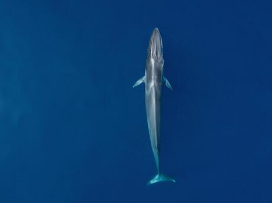
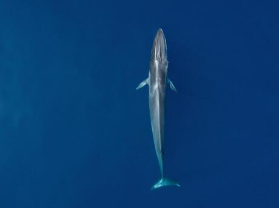
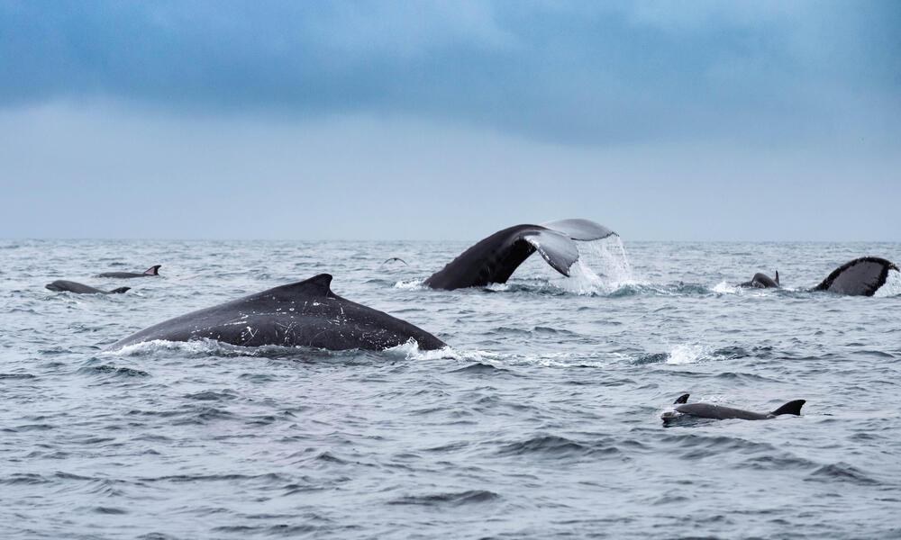
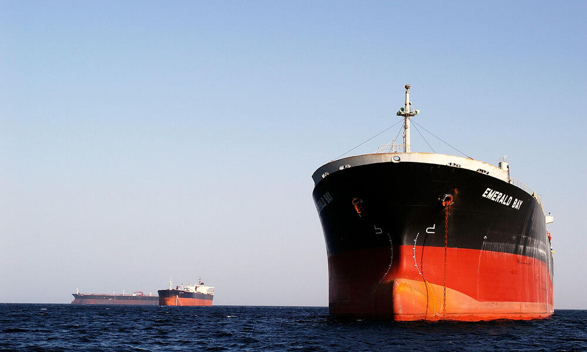

1. FACTS
Despite living in the water, whales breathe air. And like humans, they are warm-blooded mammals who nurse their young. A thick layer of fat called blubber insulates them from cold ocean waters.www.worldwildlife.org
Despite living in the water, whales breathe air. And like humans, they are warm-blooded mammals who nurse their young. A thick layer of fat called blubber insulates them from cold ocean waters.www.worldwildlife.org
Whales are at the top of the food chain and have an important role in the overall health of the marine environment. Whales play a significant role in capturing carbon from the atmosphere; each great whale sequesters an estimated 33 tons of CO2 on average, thus playing their part in the fight against climate change.www.worldwildlife.org
Despite a moratorium on commercial whaling and a ban on international trade of whale products, three countries—Iceland, Japan, and Norway—continue their commercial whale hunts. Over 1,000 whales a year are killed for such commercial purposes. The blue whale, the largest animal ever known to have existed, was almost exterminated in the 20th century due to commercial whaling.www.worldwildlife.org
Click the button on the right for more information.